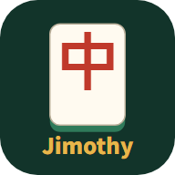

폰과 PC에서 바로 하는 마작 프로그램들이에요. 설치 없이 브라우저에서 열리고, 폰에서는 홈 화면에 추가하면 앱처럼 쓸 수 있어요.
몸통 2개 + 머리 1개, 6순 안에 끝나는 빠른 리치마작. 친구들과 온라인으로 하고, 빈자리는 봇이 채워요. 처음이면 "처음 해요"부터.
실제 대국 장면으로 푸는 리치마작 연습 문제. 패효율, 리치 방어, 텐파이 맞히기.
프로그램 2개